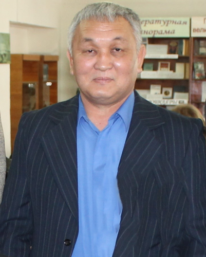

Сайт учителя
Самтонов Владимир Данзанович
Преподаватель специальных дисциплин в БПОУ РК "ЭПТК"
Обратная связь

Обо мне
Я работаю преподавателем в Бюджетном профессиональном образовательном учреждении Республики Калмыкия «Элистинский политехнический колледж» (БПОУ РК "ЭПТК")
Общий трудовой стаж
37 лет
Должность
Преподаватель специальных дисциплин
Педагогический стаж
14 лет
Министерство образования и науки РК БПОУ РК
«Элистинский политехнический колледж»
- Ф.И.О.: Самтонов Владимир Данзанович
- Дата рождения: 3 апреля 1958г.
- Место работы: БПОУ РК «Элистинский политехнический колледж»
- Должность: преподаватель спецдисциплин
- Общий трудовой стаж: 37 лет
- Педагогический стаж: 14 лет
- Стаж работы в данном учреждении: 14 лет
- Действующая квалификационная категория: высшая (приказ МОиН РК № 679 от 16.05.2016; срок окончания – 31 декабря 2021 г.)
-
Награды :
- Благодарность Председателя Народного Хурала (Парламент) Республики Калмыкия, приказ от 23.04.2015г. №152
- Благодарственное письмо ГБОУ СПО «Волгоградский энергетический колледж» за высокий уровень профессиональной подготовки студента ЭПТК, участника Всероссийской олимпиаде профессионального мастерства, 04.2017 года.
- Почетная грамота Министерства по строительству, транспорту и дорожного хозяйства Республика Калмыкия, приказ от 24.10.2012г. №229-п
- Почетная грамота Ассоциации профсоюза работников строительства, промышленности, дорожного хозяйства и автомобильного транспорта Калмыкии
- Благодарность за активное участие в подготовке и проведении регионального чемпионата "Молодые профессионалы", приказ от 21.02.2017г. №20
- Благодарность за участие во II региональном чемпионате "Молодые профессионалы"-2018 РК, приказ Регионального координационного центра WSR в РК
- Благодарность администрации ЭПТК, приказ № 207 от 04.10.2019 года.
-Почетная грамота ПАО МРСК «Юга» - «Калмэнерго», 2018 г
- Объявлена благодарность от ЭПТК, приказ №274 от 13.12.2018 года.
- Благодарность Регионального координационного центра Worldskils Russia - 2018 года за подготовку площадки по компетенции «Электромонтаж» и участие во II Региональном чемпионате «Молодые профессионалы» Worldskils Russia - 2018 года.
- Благодарственное письмо ПАО МРСК «Юга» - «Калмэнерго» 2018 г
- Пенсионер РФ, удостоверение № 500243 от 09.12.2012 года.
- «Ветеран труда Российской Федерации»
- Научная степень, звание: нет
- Электронный адрес: samtonov-vladimir@rambler.ru
Стаж работы в данном учреждении
Мой стаж составляет 14 лет
Действующая квалификационная категория и срок её окончания
Высшая (приказ МОиН РК № 679 от 16.05.2016 до 31 декабря 2021 г.)